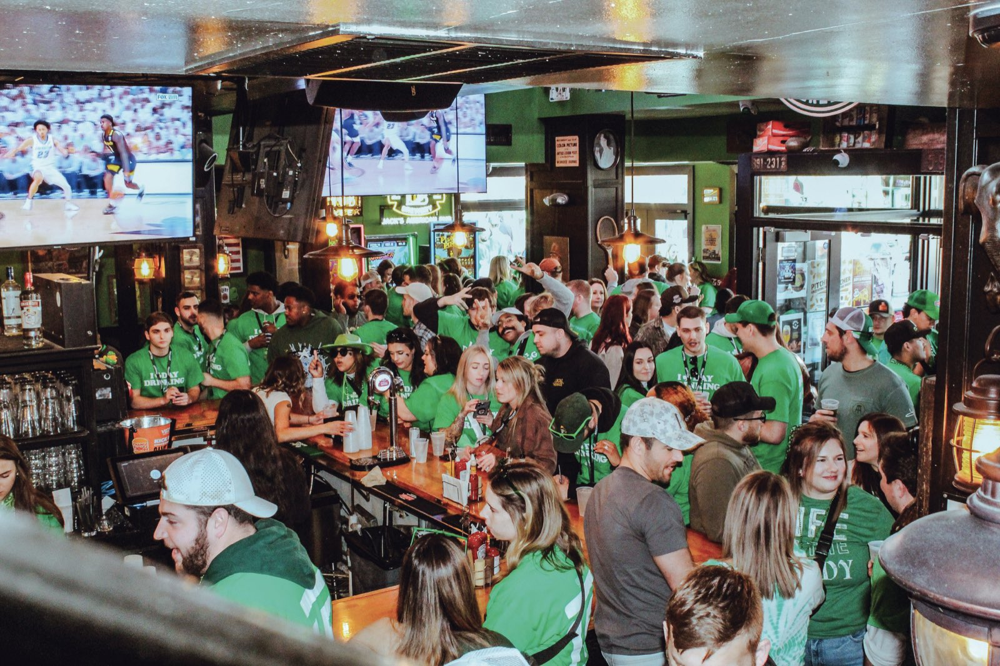
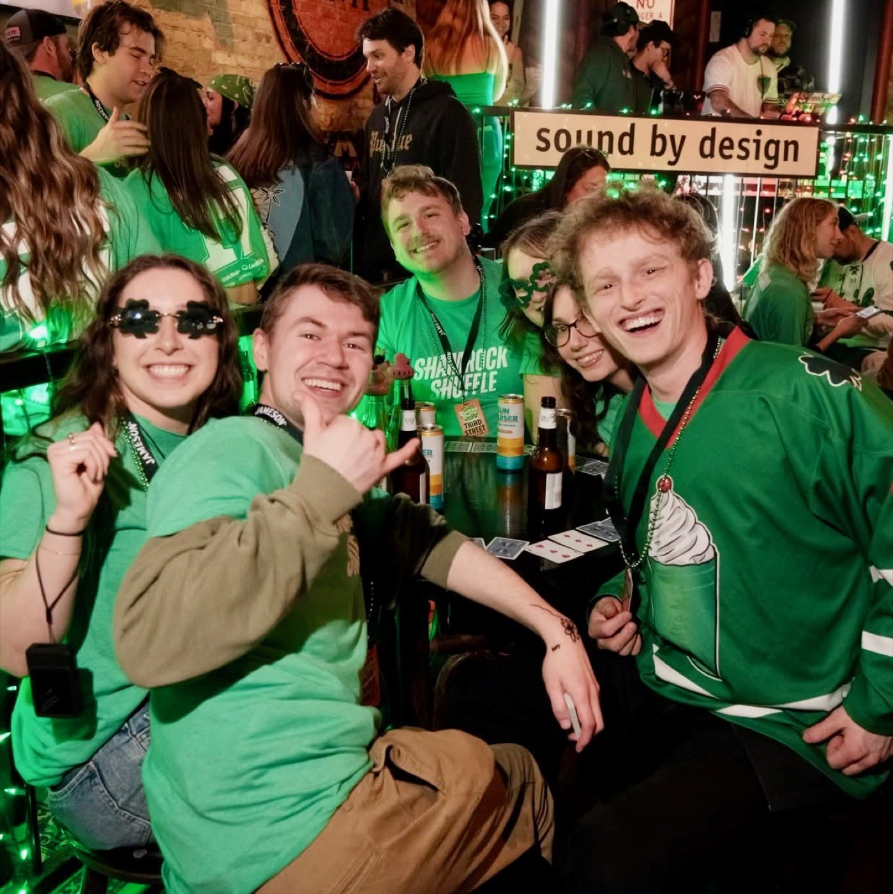
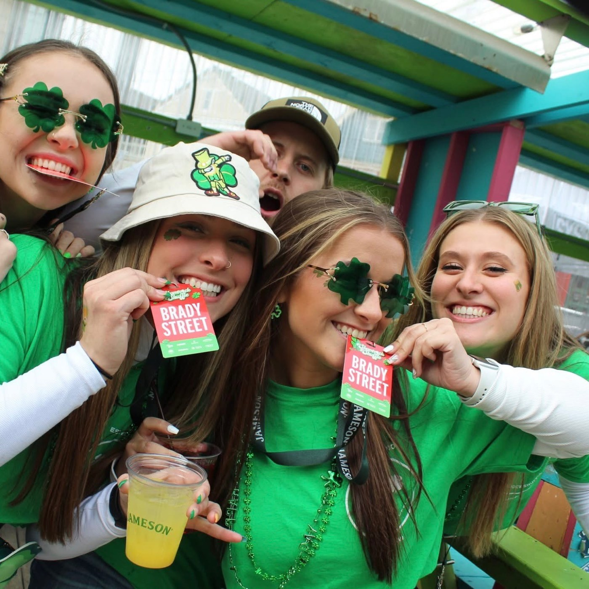
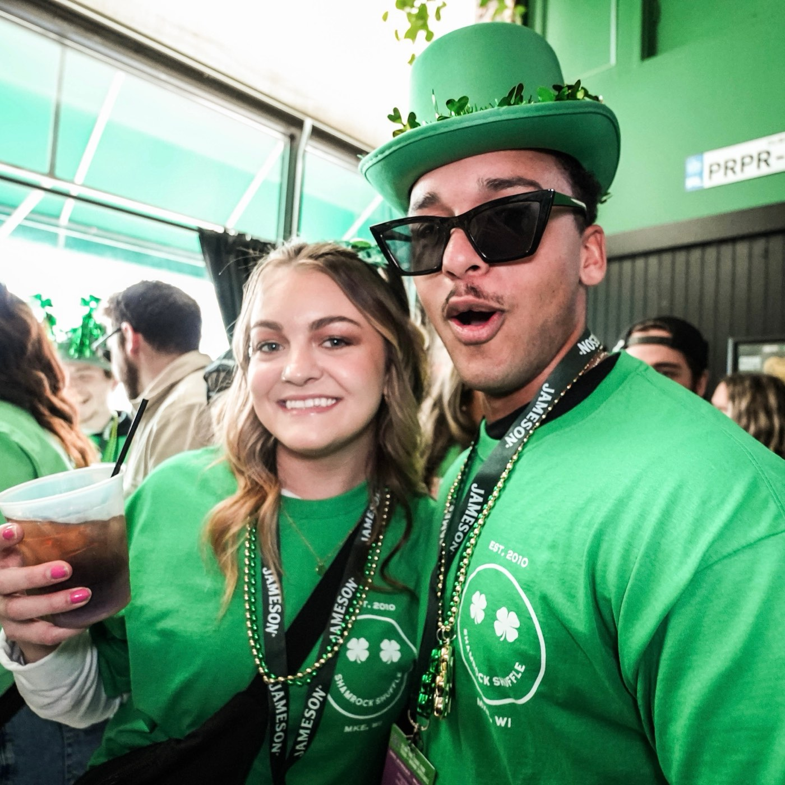

Shamrock
Shuffle 18
Not on sale yet
Stay up
to date
This one sells out before it ever really hits the site. The date goes out on Instagram first, and that is the only warning you get.
Follow @barscenesocials
No newsletter, no partner offers, no "we miss you". Just the date.
What it'll be
the one that started the whole thing



$133,000+
raised for charity since 2019
One you can
buy now
Haunted Bar Hop — 10/31/26, Brady Street. Ten bars and the only Halloween crawl on the street.